Hello, I'm Elisabeth.
Front-end Web Developer.
Bio
I am a front-end web developer with experience using Webflow, Javascript, and Hugo to build websites and web applications. I am enthusiastic about creatively using technology to solve real world problems. I love coding and being a part of such an innovative and exciting field. Outside of coding, my passions are baking, hiking, sewing, and playing with my cat and dog.
Kitchen Commons
Home Page
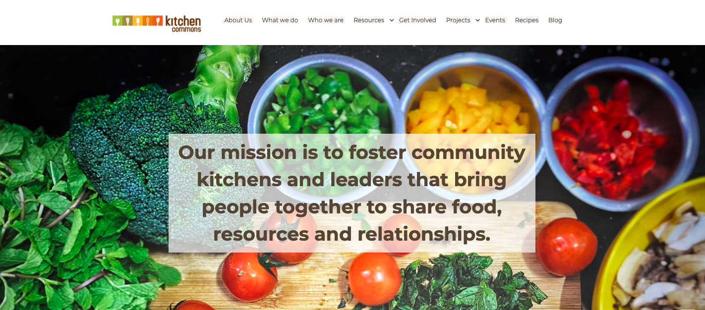Blog Page
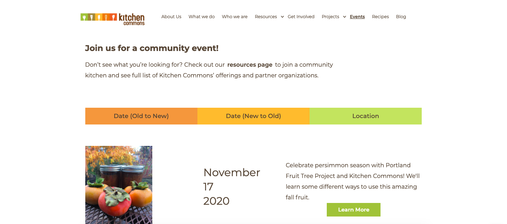Kitchen Commons is a nonprofit organization in Portland, Oregon that uses food and food justice projects to foster community. Designed in Sketch, built in Webflow.
Tech Stack
Webflow, Sketch
Live SiteProtocol Research Labs
Home Page
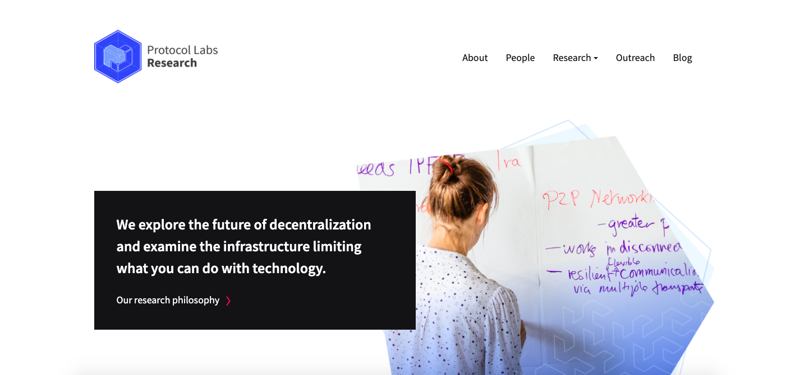Blog Page
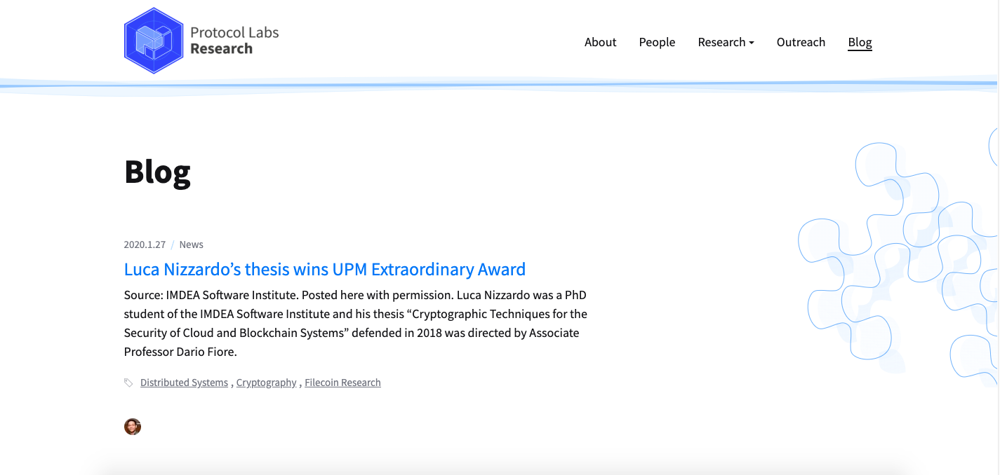Protocol Research Labs is a research site built for Protocol Labs. Built using the Hugo framework.
Tech Stack
Hugo, Tailwind CSS
Live SiteDesign - Spa
This is a static site purely for showcasing design and CSS styling.
Tech Stack
HTML, Sass
Code 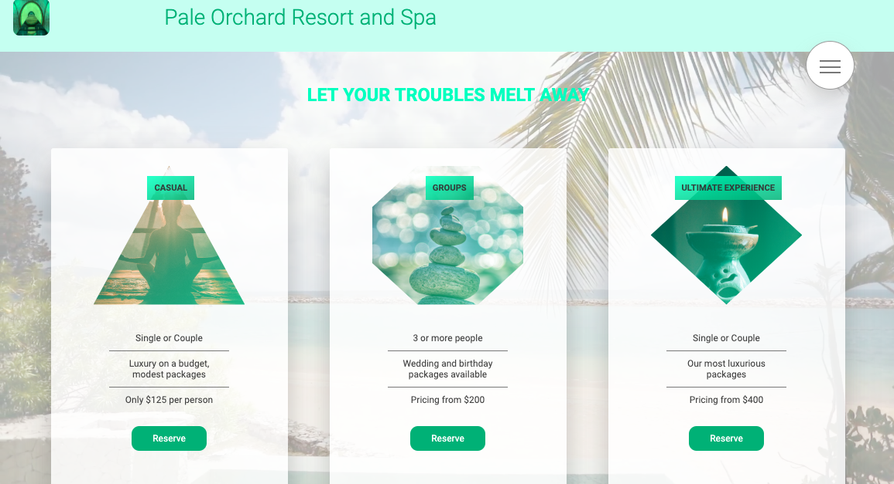Header/Main section
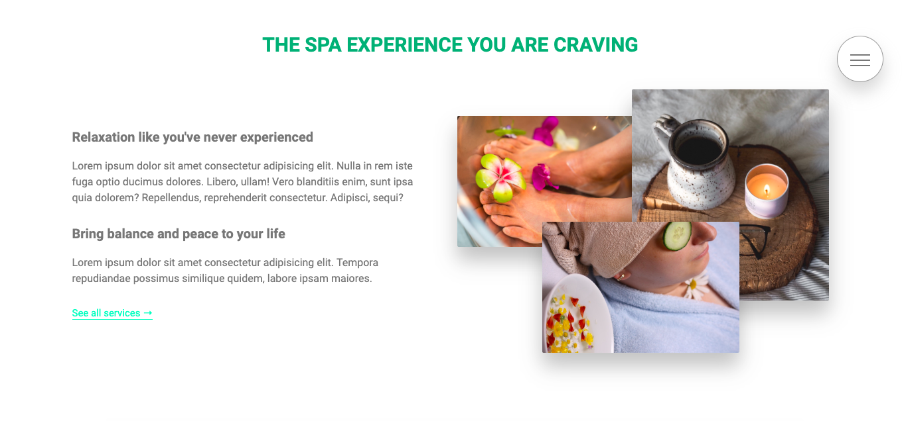Feature section
ReadingLog
ReadingLog is a logging web application. It is designed to help the user keep track of reading goals. This app lets the user input and update goals for books and then displays in an organized list.
Tech Stack
HTML, CSS, JQuery, Javascript, Node.js, Express, MongoDB, Mocha, Chai, Chai-http
Demo Code
Design - Art Museum
This is a static site purely for showcasing design and CSS styling.
Tech Stack
HTML, Sass
Code Demo 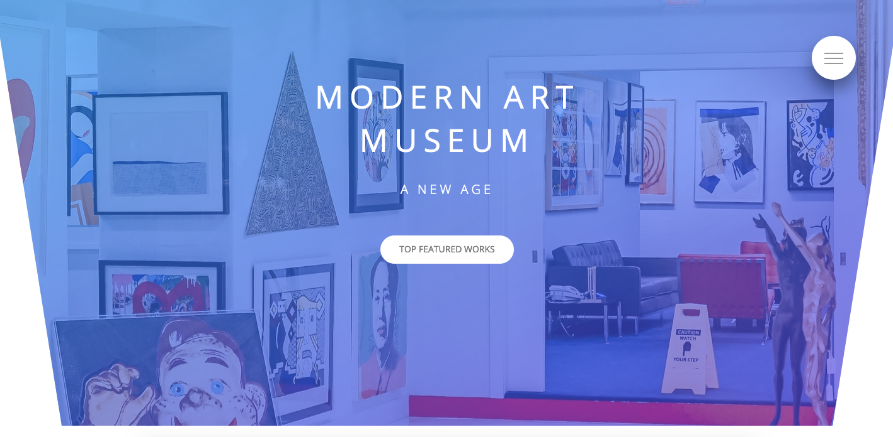Header
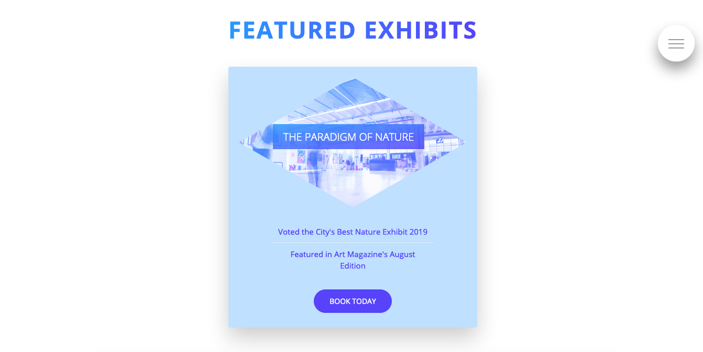Feature section
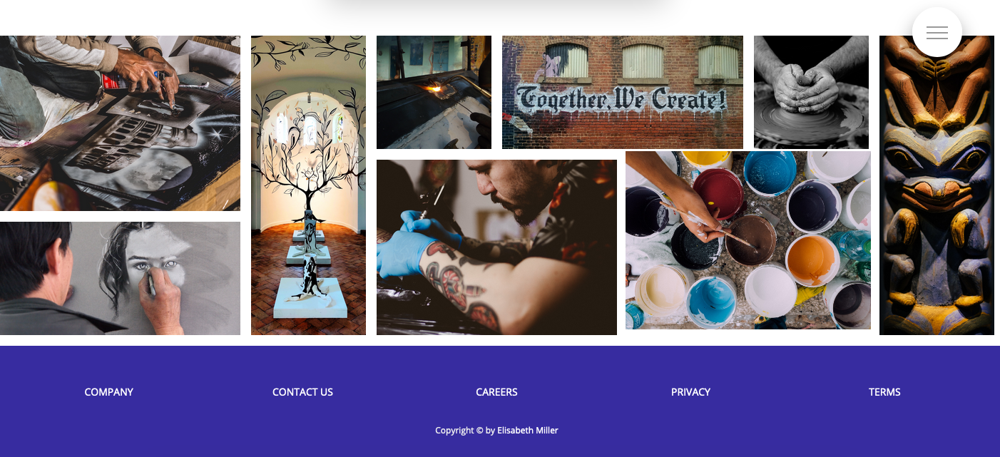Gallery section
Study Buddy
Study Buddy is a an app that allows users to connect with people to study with. The app allows users to create and find meetups in their area where students are studying together. User can login with google to create an account. From there, the user can create their own meetups to help encourage others to come and study with them! Or they can simply wait for others to create a meetup and choose to go and study.
Tech Stack
HTML, CSS, Javascript, React.js, Node.js, Express, MongoDB, Mocha, Chai, Chai-http
Backend Code - Work in progress Frontend Code - Work in progress 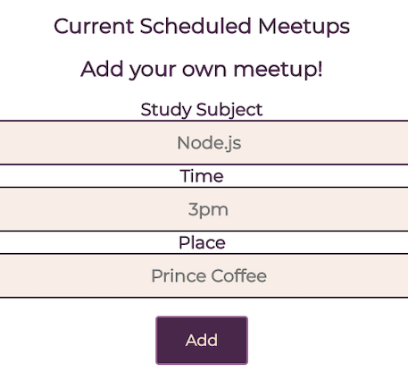Design - Animal Shelter
This is a static site purely for showcasing design and CSS styling.
Tech Stack
HTML, Sass
Code Demo 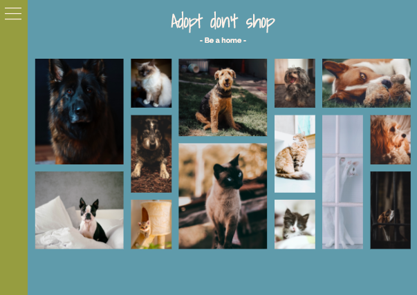Header
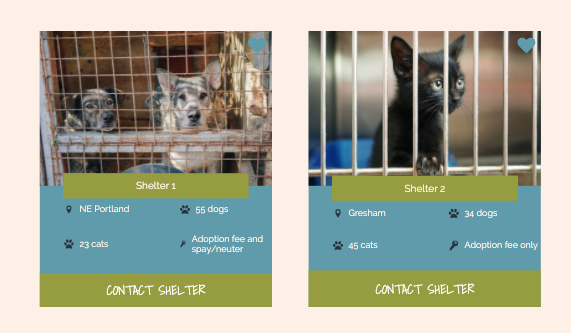Feature section
Anxiety Blog
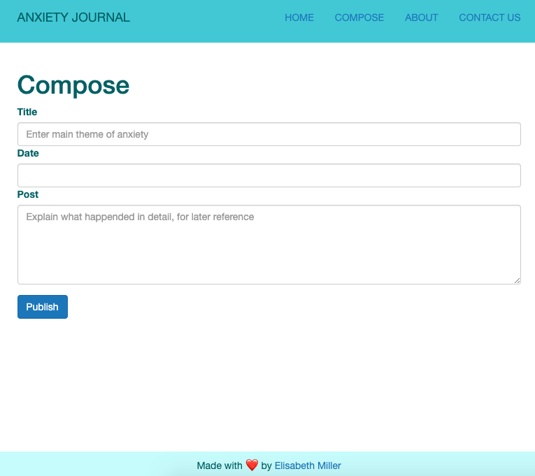Anxiety Blog is a clean, simple web application designed with the intent of being a place for the user to log their anxiety or panic attacks It uses MongoDB to read and write data for the user.
Tech Stack
HTML, CSS, Javascript, Node, MongoDB
Demo Code